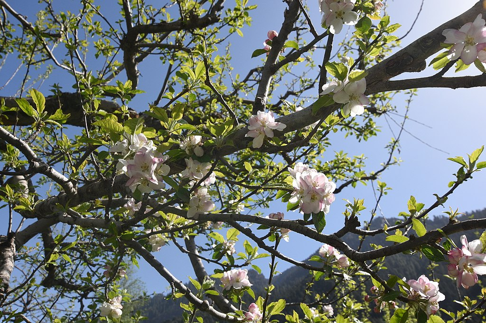
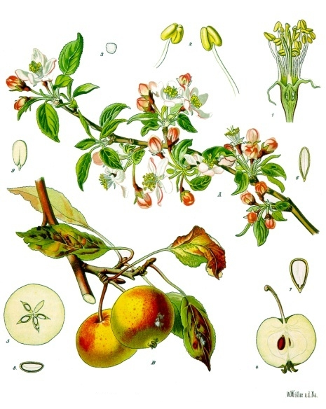
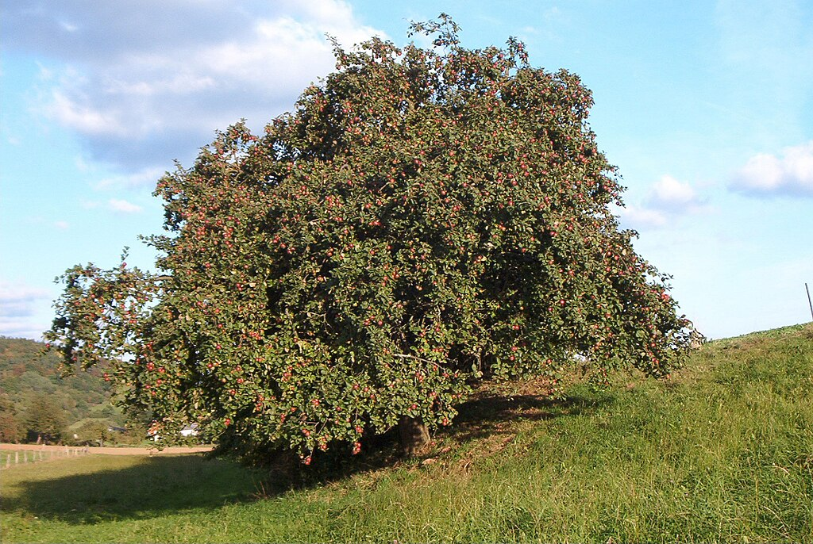
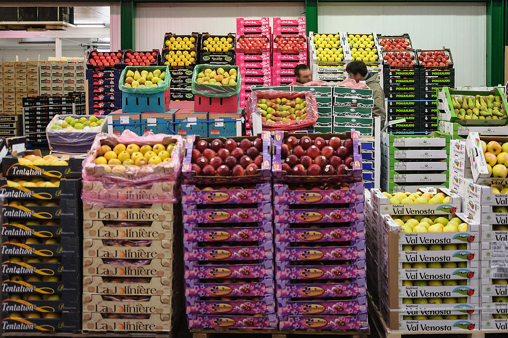

Description
The apple is a deciduous tree, generally standing 2 to 4.5 metres (6 to 15 feet) tall in cultivation and up to 15 m (49 ft) in the wild, though more typically 2 to 10 m (6.5 to 33 ft). When cultivated, the size, shape and branch density are determined by rootstock selection and trimming method. Apple trees may naturally have a rounded to erect crown with a dense canopy of leaves. The bark of the trunk is dark gray or gray-brown, but young branches are reddish or dark-brown with a smooth texture. When young twigs are covered in very fine downy hairs and become hairless as they become older.
 Fruit
The fruit is a pome that matures in late summer or autumn. The true fruits or carpels are the harder interior chambers inside the apple's core. There are usually five carpels inside an apple, but there may be as few as three. Each of the chambers contains one or two seeds. The edible flesh is formed from the receptacle at the base of the flower.
Chemistry
Important volatile compounds in apples that contribute to their scent and flavour include acetaldehyde, ethyl acetate, 1-butanal, ethanol, 2-methylbutanal, 3-methylbutanal, ethyl propionate, ethyl 2-methylpropionate, ethyl butyrate, ethyl 2-methyl butyrate, hexanal, 1-butanol, 3-methylbutyl acetate, 2-methylbutyl acetate, 1-propyl butyrate, ethyl pentanoate, amyl acetate, 2-methyl-1-butanol, trans-2-hexenal, ethyl hexanoate, hexanol.
Taxonomy
The apple as a species has more than 100 alternative scientific names, or synonyms. In modern times, Malus pumila and Malus domestica are the two main names in use. M. pumila is the older name, but M. domestica has become much more commonly used starting in the 21st century, especially in the western world. Two proposals were made to make M. domestica a conserved name: the earlier proposal was voted down by the Committee for Vascular Plants of the IAPT in 2014, but in April 2017 the Committee decided, with a narrow majority, that the newly popular name should be conserved. The General Committee of the IAPT decided in June 2017 to approve this change, officially conserving M. domestica. Nevertheless, some works published after 2017 still use M. pumila as the correct name, under an alternate taxonomy.
Cultivation
History
The apple is thought to have been domesticated 4,000–10,000 years ago in the Tian Shan mountains, and then to have travelled along the Silk Road to Europe, with hybridization and introgression of wild crabapples from Siberia (M. baccata), the Caucasus (M. orientalis), and Europe (M. sylvestris). Only the M. sieversii trees growing on the western side of the Tian Shan mountains contributed genetically to the domesticated apple, not the isolated population on the eastern side.
Breeding
Many apples grow readily from seeds. However, apples must be propagated asexually to obtain cuttings with the characteristics of the parent. This is because seedling apples are "extreme heterozygotes". Rather than resembling their parents, seedlings are all different from each other and from their parents. Triploid cultivars have an additional reproductive barrier in that three sets of chromosomes cannot be divided evenly during meiosis, yielding unequal segregation of the chromosomes (aneuploids). Even in the case when a triploid plant can produce a seed (apples are an example), it occurs infrequently, and seedlings rarely survive.
Pollination
Apples are self-incompatible; they must cross-pollinate to develop fruit. During the flowering each season, apple growers often utilize pollinators to carry pollen. Honey bees are most commonly used. Orchard mason bees are also used as supplemental pollinators in commercial orchards. Bumblebee queens are sometimes present in orchards, but not usually in sufficient number to be significant pollinators.
Cultivars are sometimes classified by the day of peak bloom in the average 30-day blossom period, with pollinizers selected from cultivars within a 6-day overlap period. There are four to seven pollination groups in apples, depending on climate:
- Group A – Early flowering, 1 to 3 May in England ('Gravenstein', 'Red Astrachan')
- Group B – 4 to 7 May ('Idared', 'McIntosh')
- Group C – Mid-season flowering, 8 to 11 May ('Granny Smith', 'Cox's Orange Pippin')
- Group D – Mid/late season flowering, 12 to 15 May ('Golden Delicious', 'Calville blanc d'hiver')
- Group E – Late flowering, 16 to 18 May ('Braeburn', 'Reinette d'Orléans')
- Group F – 19 to 23 May ('Suntan')
- Group H – 24 to 28 May ('Court-Pendu Gris' – also called Court-Pendu plat)
Maturation and harvest
Cultivars vary in their yield and the ultimate size of the tree, even when grown on the same rootstock. Some cultivars, if left unpruned, grow very large—letting them bear more fruit, but making harvesting more difficult. Depending on tree density (number of trees planted per unit surface area), mature trees typically bear 40–200 kg (90–440 lb) of apples each year, though productivity can be close to zero in poor years. Apples are harvested using three-point ladders that are designed to fit amongst the branches. Trees grafted on dwarfing rootstocks bear about 10–80 kg (20–180 lb) of fruit per year.
Storage
Commercially, apples can be stored for months in controlled atmosphere chambers. Apples are commonly stored in chambers with lowered concentrations of oxygen to reduce respiration and slow softening and other changes if the fruit is already fully ripe. The gas ethylene is used by plants as a hormone which promotes ripening, decreasing the time an apple can be stored. For storage longer than about six months the apples are picked earlier, before full ripeness, when ethylene production by the fruit is low. However, in many varieties this increases their sensitivity to carbon dioxide, which also must be controlled.
Pests and diseases
Apple trees are susceptible to fungal and bacterial diseases, and to damage by insect pests. Many commercial orchards pursue a program of chemical sprays to maintain high fruit quality, tree health, and high yields. These prohibit the use of synthetic pesticides, though some older pesticides are allowed. Organic methods include, for instance, introducing its natural predator to reduce the population of a particular pest.
A wide range of pests and diseases can affect the plant. Three of the more common diseases or pests are mildew, aphids, and apple scab.
-
Mildew
Mildew is characterized by light grey powdery patches appearing on the leaves, shoots and flowers, normally in spring. The flowers turn a creamy yellow color and do not develop correctly. This can be treated similarly to Botrytis—eliminating the conditions that caused the disease and burning the infected plants are among recommended actions.
-
Aphids
Aphids are small insects with sucking mouthparts. Five species of aphids commonly attack apples: apple grain aphid, rosy apple aphid, apple aphid, spirea aphid, and the woolly apple aphid. The aphid species can be identified by color, time of year, and by differences in the cornicles (small paired projections from their rear). Aphids feed on foliage using needle-like mouth parts to suck out plant juices. When present in high numbers, certain species reduce tree growth and vigor.
-
Apple scab
Apple scab: Apple scab causes leaves to develop olive-brown spots with a velvety texture that later turn brown and become cork-like in texture. The disease also affects the fruit, which also develops similar brown spots with velvety or cork-like
Apple scab is spread through fungus growing in old apple leaves on the ground and spreads during warm spring weather to infect the new year's growth.